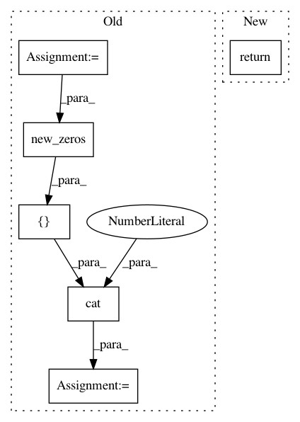

3dcb5c77165c1a0c33a35a7831182f1aa2e8ad73,fairseq/models/model_utils.py,,fill_tensors,#Any#Any#Any#Any#,34
Before Change
return y
if x.size(1) < y.size(1):
dims = [x.size(0), y.size(1) - x.size(1)]
if x.dim() == 3:
dims.append(x.size(2))
x = torch.cat([x, x.new_zeros(*dims).fill_(padding_idx)], 1)
x[mask] = y
elif x.size(1) > y.size(1):
x[mask] = padding_idx
if x.dim() == 2:
After Change
n_selected = mask.sum()
if n_selected == 0:
return x
assert n_selected == y.size(0)
if n_selected == x.size(0):
return y
In pattern: SUPERPATTERN
Frequency: 3
Non-data size: 6
Instances
Project Name: pytorch/fairseq
Commit Name: 3dcb5c77165c1a0c33a35a7831182f1aa2e8ad73
Time: 2019-10-18
Author: changhan@fb.com
File Name: fairseq/models/model_utils.py
Class Name:
Method Name: fill_tensors
Project Name: rusty1s/pytorch_geometric
Commit Name: 17aafdea24122bbb777f71a8ea7c2505e3fee84c
Time: 2019-03-15
Author: matthias.fey@tu-dortmund.de
File Name: torch_geometric/nn/models/autoencoder.py
Class Name: GAE
Method Name: reconstruction_loss